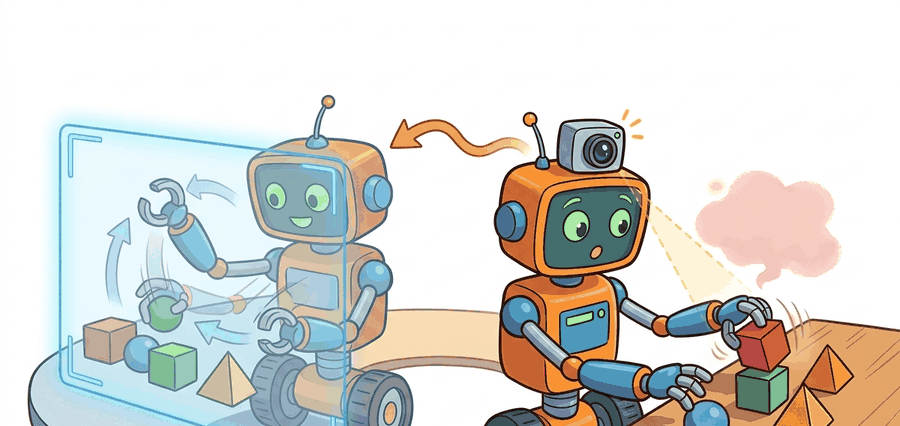

"Dexterity in simulation becomes interesting only after hardware disagrees."
A Sim-to-Real Transfer Diary

This section assumes familiarity with domain randomization introduced in section 13.2 and with contact dynamics from section 6.3. The transfer audit loop developed here is extended in section 44.2, where tactile sensing adds a new channel of sim-to-real mismatch, and the evidence-culture practices recur in Part IV alongside the broader sim-to-real RL framework of section 20.5.
A robot hand that faultlessly unscrews a bottle cap in simulation drops it on the first real attempt, because the 0.3 ms actuator delay and the true fingertip compliance were never in the model. Sim-to-real for dexterity is the hardest transfer problem in embodied AI right now: contact physics is so sensitive that a single unmodeled friction coefficient can cascade into a completely different grasp sequence. The transfer audit ledger, the stress-testing of hidden simulator assumptions against real contact traces, and the systematic repair loop that separates robots performing in the lab from those performing in the world are the core tools developed in this section.
This section explains why dexterity transfer needs more than randomization. The team must manage actuator delays, fingertip compliance, tactile noise, latency, and contact-model mismatch explicitly.
It ties dexterous learning back to sensing, simulation, and deployment. The result is a transfer ledger that records exactly what simulator assumptions survived hardware contact.
Dexterous sim-to-real does not fail only because the simulator is imperfect. It fails because contact behavior is so sensitive that small mismatches in delay, friction, or compliance can change the entire contact sequence.
Theory
The simulator serves as a proposal generator for contact strategies, not as an oracle. Transfer succeeds when the policy has seen enough variability to survive the small but decisive differences between simulated and real fingertips, objects, and timing. The concept of simulation fidelity across physical, visual, and behavioral dimensions determines which differences are tolerable.
For dexterity, the critical gaps are rarely about image realism. They are about contact realism: friction, compliance, and latency at the fingertip level, including friction coefficients, local compliance, sensor latency, finger backlash, and object inertial mismatch. Consider a concrete example. A policy trained at a fixed friction value of 0.8 achieves roughly 75% success in sim. On hardware, where actual fingertip friction ranges from 0.5 to 1.2 depending on surface wear, that same policy drops below 30%. Randomizing friction across its real range closes most of that gap without any other change. This is why contact realism dominates the sim-to-real failure budget for hands. Fingertip compliance compounds the problem. Real elastomer pads deform under load. The effective contact point shifts by several millimeters and the contact patch spreads. This changes the torque balance and often flips a grasp from stable to unstable. Teams incorporate compliance by measuring the stiffness-displacement curve offline (a force gauge and a micrometer suffice), then parameterizing that curve inside the simulator or adding a contact-normal perturbation proportional to applied force.
$$ \theta^\star = \arg\min_\theta \mathbb{E}_{\phi \sim p(\Phi)}\left[\mathcal{L}_{\text{sim}}(\theta;\phi)\right],\qquad \Delta_{\text{real-sim}} = d(\tau_{\text{real}}, \tau_{\text{sim}}) $$
Before reading the next paragraph, ask yourself: if your simulator's friction value is off by just 0.3, how badly do you expect real-world performance to drop?
Consider a specific case: the OpenAI Dactyl system (Andrychowicz et al., 2019) trained a Shadow Dexterous Hand to reorient a Rubik's cube using only simulation, then transferred to hardware. The key enabling move was not visual realism but aggressive domain randomization over 100-plus physics parameters including fingertip friction (ranging from 0.5 to 1.5), actuator delay (0 to 20 ms added latency), and object mass scaling (0.5x to 2x nominal). Even so, the policy failed on real hardware in a substantial fraction of orientations (as of the 2019 publication) where the sim had near-perfect performance, and the failure signatures traced directly to under-randomized joint backlash rather than anything visual. The lesson: the parameter ranges that matter are the ones tied to the specific contact transitions your task requires, not a uniform sweep over all parameters.
Think of seasoning a dish by cooking with many batches of salt, each batch slightly different in grind coarseness and brand. A chef who has only ever cooked with one precise brand will produce food that tastes wrong the moment a different salt is used in service. A chef who trained across many salts builds intuitions about seasoning that survive any reasonable substitute. Domain randomization works the same way: exposing the policy to a spread of friction and delay values during training is not about covering every possible future, it is about building contact strategies that do not collapse the moment the real world differs by a small but decisive amount from any single simulator setting.
The team fits or randomizes a family of simulator parameters, trains a dexterous policy across that family, and then compares simulator and hardware traces for the same task panel. The transfer artifact should include the parameter ranges and the first real-world failure signatures.
- Identify or randomize friction, delay, compliance, and sensor-noise ranges before large-scale training.
- Train on parameter families that preserve plausible contact physics instead of randomizing blindly.
- Run hardware pilots with strong safety limits and compare real traces against simulated traces directly.
- Update the simulator family or recovery policy when the first mismatch signatures appear.
Worked Example
# Record one sim-to-real gap summary for a dexterous task.
sim = {"slip_rate": 0.08, "success": 0.81}
real = {"slip_rate": 0.19, "success": 0.62}
gap = {
"slip_gap": round(real["slip_rate"] - sim["slip_rate"], 2),
"success_gap": round(sim["success"] - real["success"], 2),
}
print(gap)Expected output: The expected output reveals that real hardware slips more and succeeds less than simulation. That immediately suggests a contact mismatch rather than a purely visual mismatch.
MuJoCo, ManiSkill, and tactile simulators help produce transfer-ready rollouts, but successful dexterous transfer still depends on careful real-trace comparison and guarded hardware deployment.
Practical Recipe
- Measure actuator delay and fingertip compliance on hardware before sim policy training begins.
- Randomize only parameters that could plausibly vary in the real system.
- Compare sim and real on the same task instances and metrics whenever possible.
- Use a hardware safety gate that limits force, speed, and number of consecutive failures.
- Log real-world failures as transfer cases, not as embarrassing exceptions.
When encoding measured actuator delay in MuJoCo, set actuator_dynprm[0] (the first-order time constant) to your measured hardware value in seconds rather than leaving it at the default zero. A common mistake is randomizing a wide delay range without first anchoring the center of that range to a real measurement: if your servo has a consistent 12 ms lag, start the randomization window at roughly 8 to 18 ms rather than 0 to 20 ms, or the policy will waste capacity learning to cope with near-zero delays that never appear on hardware. A one-time step-response test with a current sensor and a logged timestamp costs under five minutes and halves the effective randomization budget needed to cover real deployment.
Randomization can become a ritual. If the parameter family does not cover the real mismatch that matters, more randomization only hides the blind spot behind extra compute.
A common assumption is that a policy achieving high success rates in simulation will transfer to real hardware with only a modest performance drop. In dexterous manipulation this assumption is systematically wrong: contact physics is so sensitive to unmodeled fingertip compliance, actuator delay, and friction variation that a policy performing at 80% in simulation can fall below 30% on the first hardware trial, with failures concentrated in contact transitions the simulator never produced. The correct mental model is that simulation success is a necessary condition for hardware transfer, not a predictor of it. Sim performance tells you the policy has learned a viable contact strategy under the modeled physics; real-trace auditing tells you whether that strategy survives the physical gaps that no simulator fully captures.
In the OpenAI Dactyl system, the Shadow Hand's 24 tendon-driven joints produced a consistent 8 to 14 ms actuation lag that was absent from the MuJoCo model at training time. During cube reorientation, that lag caused the fingertips to apply force 2 to 3 control steps after the policy intended, shifting the contact point by roughly 4 mm on the cube face and triggering an unplanned slip. The fix was not to retrain the whole policy but to add a learned residual delay model at inference time: a small 1-layer Gated Recurrent Unit (GRU) that consumed the last several joint-position readings and output a corrected action offset, substantially reducing real-world failure on the hardest orientations without any simulator change (illustrative architecture; specific numbers vary across reported configurations).
A simulator that always agrees with your policy might just be a very supportive fiction writer.
Direction 1: Foundation models for contact-aware transfer. Large vision-language-action models are being fine-tuned directly on wrist-camera and tactile streams, reducing the need for hand-crafted simulator parameter families. Google DeepMind's ALOHA 2 work (2024) showed that a transformer pre-trained on cross-embodiment data can close a large fraction of the sim-to-real gap in dexterous assembly without any explicit randomization schedule.
Direction 2: Learned contact simulators via neural physics. Rather than tuning rigid-body parameters, recent work replaces the contact model itself with a differentiable neural surrogate trained on real contact traces. The PhysDreamer line (2024-2025) and Carnegie Mellon's DiffTaichi-based hand simulators demonstrate that a learned contact model trained on a few hundred real grasps can generalize to new objects better than a randomized analytical model.
Direction 3: Tactile-driven online sim parameter identification. Tactile sensors are now used not only as a control signal but as a real-time system-identification channel: the sensor readout during the first contact milliseconds is matched against a library of simulated contact signatures to identify friction and compliance on the fly and update the policy's internal model. Berkeley's work on GelSight-guided adaptive randomization (2024) is a representative example.
Open problem for a PhD student: Current online identification methods work well for single-contact grasps but break down when multiple fingertips contact an object simultaneously, because the individual contact signatures are entangled in the sensor readings. A tractable dissertation problem is a disentanglement architecture that attributes each tactile sensor's signal to one contact site, enabling per-finger parameter updates during a grasp without full re-identification from scratch.
Could you name the top three contact parameters whose mismatch would most damage your hardware result?
Sim-to-real for dexterity makes the case for parameter families rather than single best-fit models with unusual clarity. Contact behavior lives in ranges, and robust policies must survive those ranges rather than memorize a single simulator setting.
It is also where careful evidence culture pays off. A side-by-side trace of sim and real force, slip, and orientation can explain more than a hundred aggregate benchmark points.
| Tool or Library | Role in the Topic | Builder Advice |
|---|---|---|
| MuJoCo | Dexterous transfer simulation | Use it for fast contact rollouts and parameter sweeps. |
| TACTO or tactile simulators | Touch-channel modeling | Helpful when tactile cues drive contact transitions or slip detection. |
| Hardware transfer ledger | Mismatch auditing | Record slip, timing, and success gaps for each transfer round. |
Train a toy dexterous policy in simulation under three friction settings, then evaluate a held-out friction value and explain how the transfer gap should be recorded.
When transfer fails, first check which trace diverged earliest: pose, force, slip, or timing. The earliest divergence is usually the most actionable one.
Not all sim-to-real gaps are equal in severity. A gap is typically recoverable when it affects a single contact parameter (such as friction coefficient or sensor delay) that can be measured on hardware and added to the randomization range in a follow-up training round. A gap becomes difficult to recover from when it reflects a missing contact mode entirely: for example, if the simulator never modeled fingertip deformation under lateral load, no amount of friction randomization compensates, because the contact geometry itself is wrong. The diagnostic signal is whether widening the existing parameter ranges ever reproduces the failure mode in simulation. If it does not, the model family needs a structural change, not more randomization.
Project Ideas
Beginner (weekend): Build a transfer gap logger in MuJoCo using Gymnasium: train a simple finger-push policy under three fixed friction values, evaluate on a held-out value, and print a slip-rate and success-rate gap table. The key challenge is instrumenting MuJoCo contact forces so slip events are counted consistently across friction conditions.
Intermediate (1 to 2 weeks): Implement actuator delay randomization in Isaac Lab for a two-finger pinch task, measure the sim-to-real gap by comparing simulated joint traces against logged real-robot joint traces from a low-cost servo gripper connected via ROS2, and reduce the gap by anchoring delay randomization to a measured step-response value. The key challenge is aligning the timestamp streams between the Isaac Lab rollout logs and the ROS2 topic recordings so the trace comparison is valid.
Intermediate-plus (2 weeks): Use LeRobot to collect 50 real demonstrations of a peg-insertion task, mirror the task in PyBullet with domain randomization over peg clearance and fingertip friction, train a policy in sim, and report the success gap versus the demonstration-only baseline. The key challenge is defining a consistent success criterion that can be evaluated identically in PyBullet and on the real robot.
Section References
Widely used simulator for dexterous control and transfer studies.
Open-source simulator for high-resolution vision-based tactile sensing.
Open tactile reinforcement learning (RL) environments useful for sim-to-real studies.
Dexterous sim-to-real succeeds by auditing contact mismatches explicitly and training across the parameter ranges that actually matter on hardware.
Write a transfer ledger template for a dexterous task with fields for friction, delay, tactile noise, success, slip, and first divergence time.